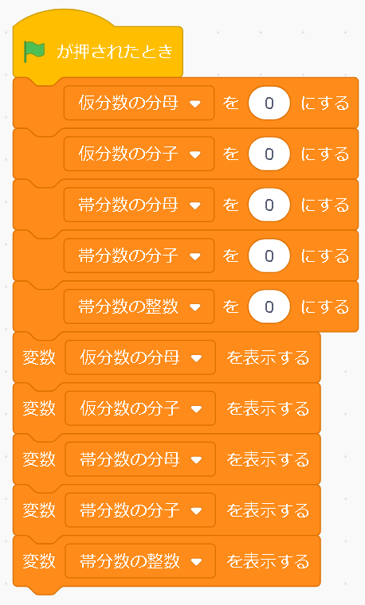
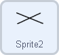
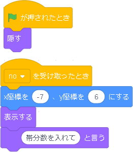

帯分数から仮分数への変換
今回は、帯分数を借り分数に変換するプログラムを作成します。コスチュームや背景など準備が少ないので、取り入れやすいかもしれません。
プログラムするところ |
|
|  | １.準備
まず、仮分数の分母・分子、帯分数の分母・分子、帯分数の整数部分の変数を用意し、プログラムの準備部分として、変数の中身をすべてゼロにし、変数それぞれを表示させます。 この表示するの部分は、ブロックを出してくるところでもいじれるので、なくてもいいです。［…を０にする］はつける癖をつけたほうがいいでしょう。 |
 |
２.主要な機能のプログラム
ここからは、目に見える機能をどんどん組み立てていきます。はじめは、計算をする前の準備段階です。変換する前に、帯分数が必要です。その帯分数の分母・分子・帯の数字を聞き出し、先ほど用意した変数に入れていきます。 変数を入れた後、もし分母よりも分子ほうが大きい数をを入れてしまった時、（この時点で帯分数ではないですよね）帯分数をいれてね！と表示し、プログラムを止めるようなシステムにします。noというメッセージを送り（注意喚起を表示させるためのタイミングを送る）、スクリプトを止めます。noを受け取るプログラムは後程出てきます。 さて、もし分子が分母より小さかったら、ちゃんとした帯分数なので、
仮分数に変換するプログラムです。
仮分数の分母は変わらないので、仮分数の分母には、帯分数の分母を入れます。
仮分数の分子には計算式を入れます。 さらにしたにもプログラムが付いていて、別のスプライトがあると思いますが、これはできた仮分数を約分し整数にするプログラムでした。そもそも帯分数は約分できないと思い外してみました。 |
プログラムするスプライト |
|
|  |
入力された文字が帯分数ではなかった場合のプログラムです。新しく×を書いたスプライトをつくり、 そのスプライトに、左のようなプログラムをします。 まず、緑の🏴が押された時点で隠すようにします。 一度この実行された後、また新たに全体のプログラムが実行する時に 表示が残らないようにするためです。 新しく×を書いたスプライトをつくり、 そのスプライトに、右のようなプログラムをします。 まず、緑の🏴が押された時点で隠すようにします。 一度この実行された後、また新たに全体のプログラムが実行する時に 表示が残らないようにするためです。 |